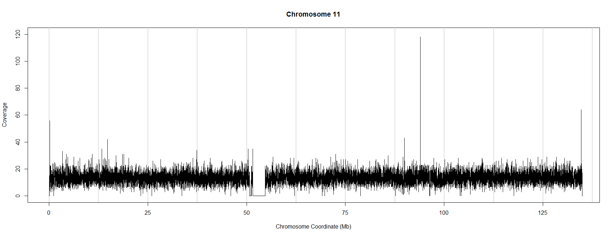
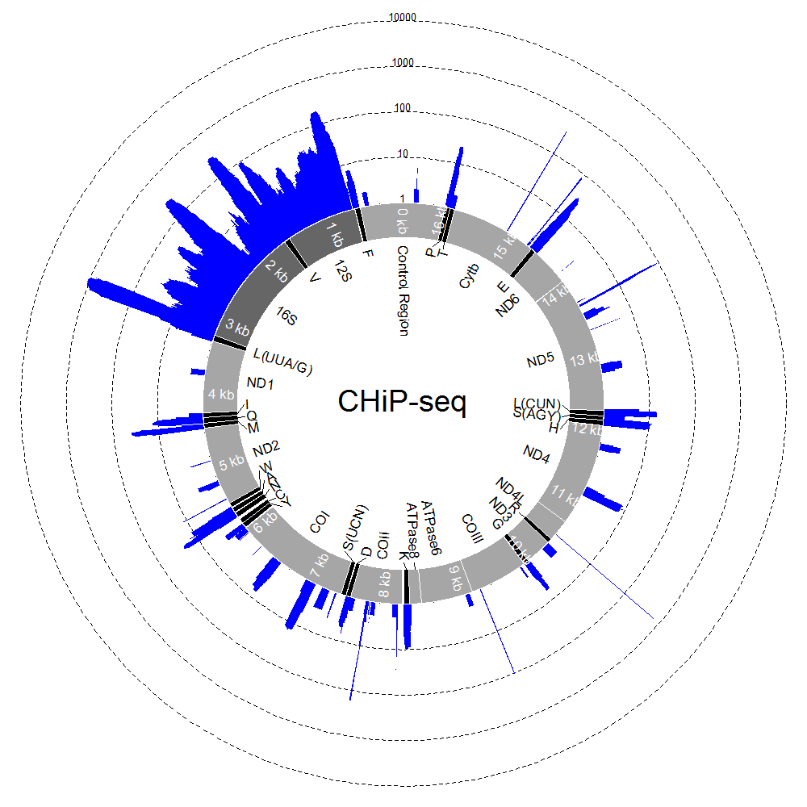

Introduction
In my last post I described the start of a typical high-throughput sequencing data analysis workflow: how to align paired-end reads, recorded in .fastq files, against a reference sequence. The outputs from that workflow are .bam files describing the alignment of reads against the reference. Such files are useful in several different contexts; I have had a number of requests for help with extracting read coverage (number of reads per nucleotide for some or all of the genome) from .bam files and so this seems like a natural place to start a new post.

Some reasons for being interested in coverage:
- Pilot sequencing runs: Have I gathered sufficient reads to observe SNPs, deletions or insertions along the sampled genome? Sequencing experiments are often designed with a minimum required number of reads per base. Trial sequencing runs can help determine the amount of sequencing time (and cost) required to achieve this minimum number of reads.
- Genome-wide quality control: Are there any specific areas of the genome where my sequencing is running into trouble? Regions of the genome with highly repetitive DNA, aneuploidy or gross chromosomal rearrangements can be detected by scanning the coverage along chromosomes.
- ChIP-seq to identify protein-DNA interactions: the number of reads per base (coverage) is proportional to the affinity of the target protein for sequences along the genome. In this case, estimating coverage is the primary purpose of the experiment.
Software Installation
The ShortRead package for R is well suited to analysing coverage in .bam files (Morgan et al. (2009)). R is a powerful, open-source, statistical programming language with many interesting add-ons available. R is extremely useful for a wide range of tasks, particularly reading in data from files and generating plots. It is well worth spending time getting to grips with R and there are several excellent courses run here in Newcastle each year. There are also online tutorials like this one to get you started.
R
If you don't already have R installed on your machine, it's easy to just install it now. R is open source and freely available online. Note that you will need to have administrator rights on your machine. You can download the relevant installation files for Windows or OSX here. For Newcastle University users: R has recently been rolled out onto many of the university desktop machines. If it's not installed on your machine, raising a request with your local IT support officer should get it sorted out. For Ubuntu (Linux) users, you can install R on the command-line as follows:
sudo apt-get update sudo apt-get install r-base
Once R is installed, you can start it by typing "R" (followed by ENTER) at the command-line to get a text-only interface or navigate to an R shortcut for the GUI which has a windowed interface (e.g. on Windows: Start->All Programs->R->Rx64 3.0.1).
Regardless of which interface you prefer, commands are issued in the command window, predominantly by typing or pasting text. Importantly, all commands are fully scriptable (can be written in a text file, saved, copied, edited, distributed etc.), which saves a huge amount of time, even in the short-term and makes analysis reproducible and allows it to be assessed by others.
ShortRead
Once R is installed, you need to install an add-on for R which can handle high-throughput sequencing data. The ShortRead package on bioconductor is designed for this task. To install it execute the following two lines (each followed by ENTER) in an R console:
source("http://bioconductor.org/biocLite.R")
biocLite("ShortRead")
Analysis
Human Chromosome 11
Here is a simple example script which uses the R package ShortRead to visualise coverage. It takes reads from a human genome (chromosome 11) which was sequenced as part of the 1,000 genomes project. You can download the .bam file here.
To run the script yourself, place the .bam file into a directory on your computer and set the "working directory" in your R session to point to that directory. For example, using the R GUI under Windows, click on the R Console window to bring it into focus and select File -> Change Dir to navigate to the directory containing the .bam file. There are several ways to run the script, but probably the clearest is to save the script to a text file in the same directory. Give it a name like "Coverage.R". Then run it by typing the following command in the R console (followed by ENTER):
source("Coverage.R")
The script above produces the following (thinned) plot of coverage along chromosome 11 in this experiment:
If you have your own .bam file you can use the script above to visualise coverage by copying it to your working directory, changing the sname and chrname variables in the "showReads.R" text file you have just created and running the script again.
Human Mitochondrial DNA
By writing a more complicated example script, also using ShortRead, we can visualise coverage along the circular, mitochondrial genome during a ChIP-seq experiment. The script reads in a text file for annotating the mitochondrial genome (which you can download here) and a .bam alignment file (which you can download here) and uses these to produce plots like the one below.
As well as a working version of R and the ShortReads package, this mtDNA script requires two additional packages: plotrix and ecolitk, which can be installed by executing the following commands (and following the on-screen instructions) inside an R console:
install.packages("plotrix")
source("http://bioconductor.org/biocLite.R")
biocLite("ecolitk")
To run the script, download the mtDNA_Colours.txt file and the .bam alignment file to your working directory. Copy the contents of the example script to a text file in your working directory, called "mtDNA.R" for example. You can edit the mtDNA_Colours.txt file to change gene labels for instance (though this file must remain in tab-delimited text format). By editing the last line of the script, you can also change the name of the alignment file to be analysed, maximum number of reads for the plotted histogram (readmax), histogram colour (histColour), whether the number of reads is plotted on a log scale (logged=TRUE) or on a linear scale (logged=FALSE), as well as the text appearing in the centre of the circle (label).
Finally, you can execute the script as above, by executing the following command in the windows GUI R console:
source("mtDNA.R")